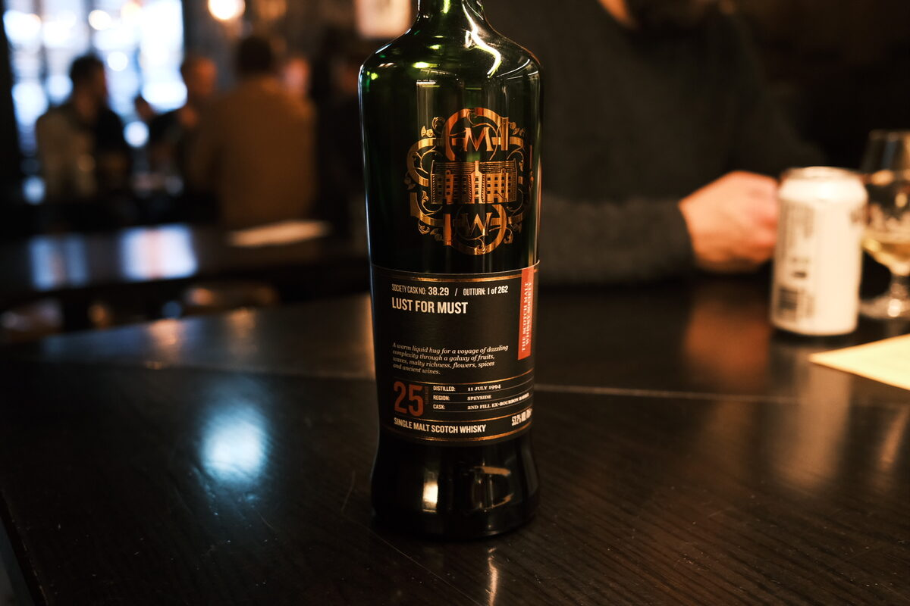

Caperdonich "Lust for must" 1994 SMWS 38.29 25 years 53.2% (second fill ex-bourbon barrel)
Silent distillery. Weirdo bottling name. Apologies for the length.
Colour Amber.
Nose Caramel and white chocolate. Bananas and kiwi fruit. Apple pies with a heaping of cinnamon. Strawberries and cream. Hints of lavender, black tea. Muesli with dried pawpaw, sultanas. Jam and scones. A hint of coconut. A squeeze of lemon and a drop of oil. Fruit juices from afar. Alright, this is getting ridiculous: it smells good. With water, creamy, roasted hazelnuts. Almost hoppy..?
Palate Intensely herbal – lavender, rosemary, coriander, mint… scented wax and grass. Floral as hell. Malty. Such a unique profile! Quite bitter, astringent, hints of an alpine amaro perhaps. A bit earthy, oak. Sharp and angular, lemon and lime peels. Thick mouthfeel, oily. With water, a little minerality, a pinch of salt? Chalk. Tropical: pineapple, banana, coconut.
Finish Herbaceous. Lashings of caramel, candied lemon slices. Thick, waxy, an oily savouriness. Long and warming. With water, whipped cream, caramel.
Comments Really quite special. Huge herbaceous and floral notes. Powerful. 92/100.

Posted by Dominic on 14 Jun 2021